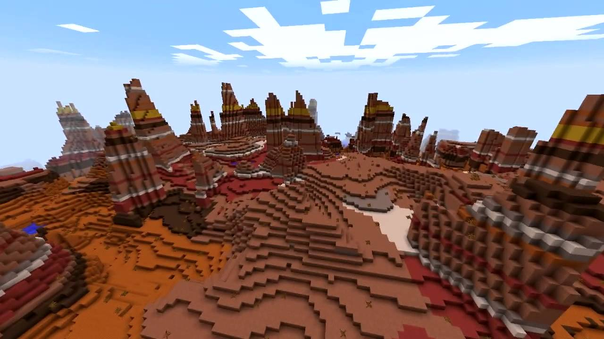
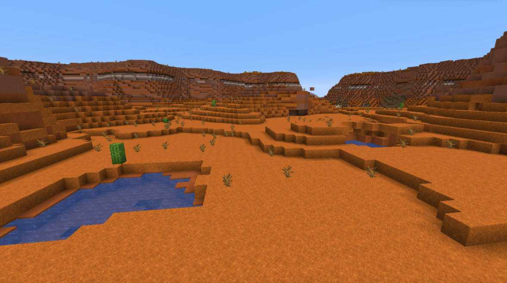
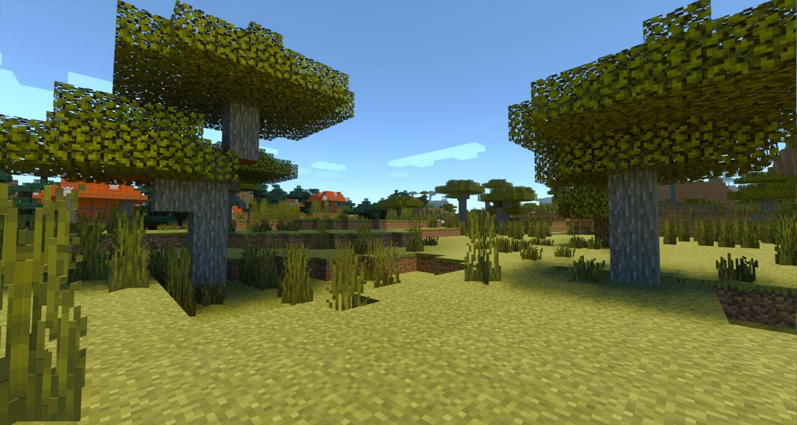

Minecraft

Minecraft é um jogo sandbox 3D desenvolvido pela Mojang Studio sondeos jogadores interagem com um ambiente tridimensional totalmente modificável feito de blocos e entidades. Sua jogabilidade permite que os jogadores escolham a maneira como jogam, permitindo inúmeras possibilidades. Existem quatro edições do Minecraft: Edição Java , Edição Bedrock , Edição Educação e Edição China .
Uma rara variação do bioma de tundra nevada, onde há grandes picos de gelo compactado, bem como geleiras. Normalmente essas estalagmites são de 10 a 20 blocos de altura, mas algumas longas e finas podem chegar a mais de 50 blocos de altura. Todos os blocos de grama neste bioma são substituídos por blocos de neve. Possui uma menor chance de gerar mobs passivos durante a geração de terreno do que em outros biomas (7% versus 10%).
o bioma mais conhecido e desejado é um Campo de Cogumelos, um local isolado repleto de fungos e lar também das incomuns "Mooshroom", vacas que têm Cogumelos que crescem em suas costas. Não há uma forma específica de encontrar esse bioma, porém jogadores podem "trapacear" um pouco.
 Este bioma é composto de dunas ou areia, arbustos mortos e cactos. Arenito é normalmente encontrado abaixo da areia. Você vai perceber que nunca chove no deserto. Aldeias NPC, poços deserto e templos podem ser encontrados neste bioma a selva é um bioma do Overword, cercado por árvores gigantes, muito conhecido por ter árvores extremamente altas e seu famoso templo, onde você pode conseguir vários itens.